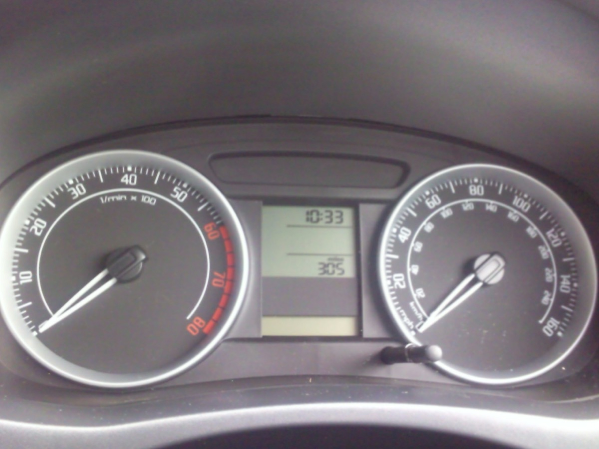

전세대출 갈아타기 2026 — 청년 2.2%·신혼 1.9%, 은행 바꾸면 이자 연 100만원 차이
30초 요약
| 항목 | 내용 |
|---|---|
| 두 갈래 | 시중은행 전세대출는 앱으로 갈아탈 수 있습니다(대환대출 인프라). 버팀목·디딤돌 같은 저금리 정책자금은 갈아탈 대상에서 아예 제외됩니다 — 이미 낮은 쪽이라 반대 방향 이동만 가능합니다 |
| 같은 보증기관 | 갈아탈 때는 기존 대출과 같은 보증기관(HF·HUG·SGI)의 보증부 상품으로만 이동할 수 있습니다. 공사 보증인데 HUG 상품으로 옮기는 건 안 됩니다 |
| 시점 | 실행 3개월 후부터 임차기간 절반이 지나기 전까지. 갱신 계약이면 만료 2개월 전~15일 전에 신청을 끝내야 합니다 |
| 한도 | 증액 대환은 불가, 기존 대출 잔액 이내. 단 갱신으로 보증금이 오르면 그 증가분만큼 증액은 허용됩니다 |
| 차이 예시 | 신혼부부전용 버팀목 최저 연 1.9%과 시중은행 전세대출 4%대 사이에는 1억당 연 200만원 이상 차이가 납니다. 방향을 잘못 잡으면 이자를 더 물게 됩니다 |
1. 누가 해당하나 — 두 갈래부터 구분
전세대출을 갈아탄다고 할 때 실제로는 두 개의 다른 제도를 말합니다. 첫째는 대환대출 인프라로, 2024년 1월 31일부터 모든 보증부 전세대출이 대상입니다. 대출비교 플랫폼 4곳과 14개 금융회사 자체 앱에서 기존 대출을 조회하고 더 낮은 금리의 상품으로 앱 안에서 옮길 수 있습니다. 둘째는 정책자금이 되려 대환의 도착지가 되는 경우로, 제2금융권의 비싼 전세대출을 버팀목으로 갈아 넣는 길입니다.
여기서 가장 많이 하는 실수가 방향 착각입니다. 버팀목 전세자금대출은 대환대출 인프라의 '갈아탈 수 없는 기존 대출' 목록에 명시돼 있습니다(주택도시기금 버팀목·디딤돌, 주택금융공사 보금자리론 등). 저금리 정책금융에서 시중은행 대출로 옮기는 원정대환이 구조적으로 차단된 것입니다. 반대로 시중은행 전세대출을 들고 있는 사람은 요건만 맞으면 버팀목 신청을 새로 해서 들어갈 수 있고, 이 방향이 금리 차이의 대부분을 만듭니다.
2. 얼마를 내나 — 2026년 기금 금리표
변동금리는 코픽스 연동으로 갱신되지만 신규 접수 시점의 고시 금리가 기준입니다. 2026년 현재 기본금리 범위는 일반 연 2.5~3.5%, 신혼가구 연 1.9~3.3%, 청년가구 연 2.2~3.3%입니다(2026년 2월 고시 기준). 소득·보증금으로 구간이 정해집니다.
| 구분 | 대상 | 금리(연) | 한도 | 임차보증금 상한 |
|---|---|---|---|---|
| 청년전용 버팀목 | 만 19~34세 무주택 세대주, 부부합산 연소득 5천만원 이하 | 2.2 / 2.5 / 2.9 / 3.3% (소득 4구간) | 1.5억원(보증금 80% 이내) 만 25세 미만 단독세대주 1.2억 | 3억원 이하 |
| 신혼부부전용 | 혼인 7년 이내·3개월 내 결혼 예정, 연소득 7.5천만원 이하 | 1.9~3.3% (소득 4구간×보증금 4구간) | 수도권 2.5억·그 외 1.6억 (보증금 80% 이내) | 수도권 4억·그 외 3억 |
| 일반 버팀목 | 부부합산 연소득 5천만원 이하 무주택 세대주 | 2.5~3.5% | 수도권 1.2억·그 외 0.8억 | 전용 85㎡ 이하 |
신혼부부표의 실제 값은 소득과 보증금이 격자를 이루면 한 칸씩 올라갑니다. 소득 2천만원 이하면 보증금 5천만원 이하 1.9%에서 1.5억 초과 2.2%, 소득 6천만~7.5천만원이면 3.0~3.3%입니다. 우대금리로 부동산 전자계약·전자적금 중 하나만 들어도 0.1~0.2%p가 빠지고, 기초생활수급·차상위·한부모는 1.0%p, 다자녀는 자녀 수대로 4년간 적용됩니다. 최종금리가 연 1.0% 미만으로 내려가면 1.0%로 고정됩니다.
시중은행 보증부 전세대출이 연 4.2%인 차주가 1억 5천만원을 들고 있고 신혼 요건이 된다면, 3.1% 상품으로 옮기는 순간 1억 5천만원 기준 연 165만원이 줄어듭니다. "은행 바꾸면 연 100만원"은 부풀린 숫자가 아니라 1억 기준 1%p의 산술입니다.
3. 제외·주의 — 상한은 있지만 함정은 별개
- 연체·법적 분쟁 중인 대출은 갈아탈 수 없습니다. 기존 대출이 정상 상태여야 하고, DSR 규제비율(은행 40%)을 이미 초과한 차주도 신규 대출이 거절됩니다. 전세대출 자체는 DSR 산정에서 제외되므로 주담대와 사정이 다릅니다.
- 보증기관 장벽. HF 보증 대출은 HF 보증 상품으로만, HUG는 HUG로만 이동 가능합니다. 앱에서 비교 대상에 안 뜨는 첫 번째 이유가 이것입니다.
- 중도상환수수료를 먼저 계산하세요. 옮기는 데 1~2% 수수료가 든다면 금리 인하 폭과 몇 년 치로 상쇄되는지부터 따져야 합니다. 실행 후 1~3년 내 면제 조건인 은행도 많습니다.
- 연장할 때마다 소득 재심사. 2025년 2월부터 기한연장 시마다 소득을 다시 봅니다. 결혼·이직으로 부부합산 소득이 기준을 넘으면 연장 시점에 최고금리로 올라갈 수 있습니다.
- 연장 시 10% 상환 규칙. 기한연장할 때 잔액의 10% 이상을 갚아야 하고, 미상환하면 금리가 가산됩니다. 처음부터 상환 여력을 두고 약정하세요.
- 제2금융권 청년 대환은 조건이 좁습니다. 전용 60㎡ 이하·보증금 5천만원 이하 주택에서 제2금융권 전세대출을 정상 이용 중인 만 34세 이하·연소득 2천만원 이하 무주택 세대주에게 임차보증금 80% 이내, 한도 3,500만원(청년전용 버팀목 금리 준용)로 갈아탈 길을 열어둡니다. LH·지방공사 임대주택 거주자도 이 트랙을 쓸 수 있습니다.
- 임대인 동의는 필수가 아닙니다. 다만 신규 대출 은행이 임차 확인을 요청할 수 있으니 계약서 사본과 확정일자 자료를 준비해 두면 빠릅니다.
4. 서류 — 이것만 있으면 됩니다
- 전세 임대차계약서(확정일자·신고필증 포함). 소득 증빙은 마이데이터·웹 스크래핑으로 은행이 직접 확인하므로 앱 신청에서는 제출이 생략되는 경우가 대부분입니다.
- 기존 대출 잔액증명: 대환 한도가 잔액 이내라 기준이 됩니다. 앱 조회로 대체되지만 발급일이 1개월 이내인 사본을 요구받을 수 있습니다.
- 신분증·등기부등본·주민등록등본: 영업점 처리로 가면 이 셋은 기본입니다.
5. 순서 — 이 순서로 하세요
1단계, 방향 판정. 지금 대출이 버팀목이면 갈아타기는 포기하고 우대금리 재적용(전자계약·자녀 금리우대 추가)만 따집니다. 시중은행 대출이면 2단계로.
2단계, 보증기관 확인. 약관에서 보증서가 HF·HUG·SGI 중 어느 것인지 확인합니다. 같은 보증기관 상품을 비교 대상으로 봅니다.
3단계, 시점 확인. 실행 후 3개월이 지났고 임차기간 절반이 남았습니까? 갱신을 앞뒀다면 만료 2개월 전~15일 전 창을 노립니다.
4단계, 비교 신청. 플랫폼 앱에서 잔여기간·보증금을 넣어 조건을 나란히 떱니다. 심사는 2~7일, 비대면 서류는 사진 촬영으로 끝납니다.
5단계, 약정·자동 상환 확인. 신규 약정 후 대출금이 중개시스템으로 기존 대출 상환에 자동 충당되는지까지 확인하면 끝입니다. 상환이 반납될 때까지 방치하면 양쪽 이자가 같이 굴러갑니다.
6단계, 정책자금 진입 병행. 시중은행 대출을 유지한 채 버팀목 요건(연령·소득·순자산 3.45억 이하)이 된다면 신규 버팀목 승인을 받아 잔금일에 맞춰 대환하는 편이 금리 격차가 가장 큽니다. 기금e든든 또는 국민·우리·농협·신한·하나·부산·iM 은행 앱에서 진행합니다.
6. 안 될 때
심사가 거절되면 사유서를 요구하세요. 보증기관 불일치인지 DSR 초과인지 연체 이력인지에 따라 손볼 곳이 다릅니다. 보증기관 장벽은 우회로가 없으니 같은 보증기관 내에서 다시 비교하고, 소득 요건으로 정책자금이 막혔다면 지자체 협약 전세대출(경기주거복지포털 등 지역별 포털에 금리표가 게시됩니다)을 다음 후보로 두세요. 은행연합회 대출 비교공시와 기금포털의 금리 안내 페이지에서 본인의 구간을 미리 대조할 수 있습니다.